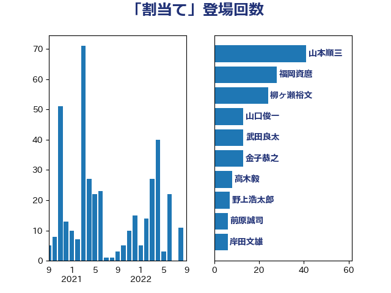

単語「割当て」

| 山本順三 | 自由民主党 | 41 回 |
| 福岡資麿 | 自由民主党 | 28 回 |
| 柳ヶ瀬裕文 | 日本維新の会 | 24 回 |
| 山口俊一 | 自由民主党 | 13 回 |
| 武田良太 | 自由民主党 | 13 回 |
| 金子恭之 | 自由民主党 | 13 回 |
| 高木毅 | 自由民主党 | 8 回 |
| 野上浩太郎 | 自由民主党 | 7 回 |
| 前原誠司 | 国民民主党 | 6 回 |
| 岸田文雄 | 自由民主党 | 6 回 |
| 平将明 | 自由民主党 | 6 回 |
| 松村祥史 | 自由民主党 | 6 回 |
| 茂木敏充 | 自由民主党 | 6 回 |
| 穀田恵二 | 日本共産党 | 5 回 |
| 小沼巧 | 立憲民主党 | 4 回 |
| 浜田聡 | NHK党 | 4 回 |
| 上田清司 | 国民民主党 | 3 回 |
| 中司宏 | 日本維新の会 | 3 回 |
| 守島正 | 日本維新の会 | 3 回 |
| 小泉進次郎 | 自由民主党 | 3 回 |
| 山下芳生 | 日本共産党 | 3 回 |
| 沢田良 | 日本維新の会 | 3 回 |
| 田村憲久 | 自由民主党 | 3 回 |
| 若松謙維 | 公明党 | 3 回 |
| 菅義偉 | 自由民主党 | 3 回 |
| 鈴木庸介 | 立憲民主党 | 3 回 |
| 大塚拓 | 自由民主党 | 2 回 |
| 宮内秀樹 | 自由民主党 | 2 回 |
| 小森卓郎 | 自由民主党 | 2 回 |
| 山田宏 | 自由民主党 | 2 回 |
| 浅田均 | 日本維新の会 | 2 回 |
| 田名部匡代 | 立憲民主党 | 2 回 |
| 石川香織 | 立憲民主党 | 2 回 |
| こやり隆史 | 自由民主党 | 1 回 |
| 三浦信祐 | 公明党 | 1 回 |
| 中山展宏 | 自由民主党 | 1 回 |
| 中西祐介 | 自由民主党 | 1 回 |
| 井上哲士 | 日本共産党 | 1 回 |
| 吉川沙織 | 立憲民主党 | 1 回 |
| 吉田忠智 | 立憲民主党 | 1 回 |
| 塩川鉄也 | 日本共産党 | 1 回 |
| 小西洋之 | 立憲民主党 | 1 回 |
| 山崎誠 | 立憲民主党 | 1 回 |
| 山本博司 | 公明党 | 1 回 |
| 山添拓 | 日本共産党 | 1 回 |
| 岡本三成 | 公明党 | 1 回 |
| 本村伸子 | 日本共産党 | 1 回 |
| 森田俊和 | 立憲民主党 | 1 回 |
| 浦野靖人 | 日本維新の会 | 1 回 |
| 渡辺猛之 | 自由民主党 | 1 回 |
| 熊谷裕人 | 立憲民主党 | 1 回 |
| 田村智子 | 日本共産党 | 1 回 |
| 石橋通宏 | 立憲民主党 | 1 回 |
| 竹内真二 | 公明党 | 1 回 |
| 笠井亮 | 日本共産党 | 1 回 |
| 舞立昇治 | 自由民主党 | 1 回 |
| 藤井比早之 | 自由民主党 | 1 回 |
| 西村康稔 | 自由民主党 | 1 回 |
| 足立康史 | 日本維新の会 | 1 回 |
| 道下大樹 | 立憲民主党 | 1 回 |
| 長浜博行 | 無所属 | 1 回 |
| 阿達雅志 | 自由民主党 | 1 回 |
| 阿部弘樹 | 日本維新の会 | 1 回 |
| 音喜多駿 | 日本維新の会 | 1 回 |